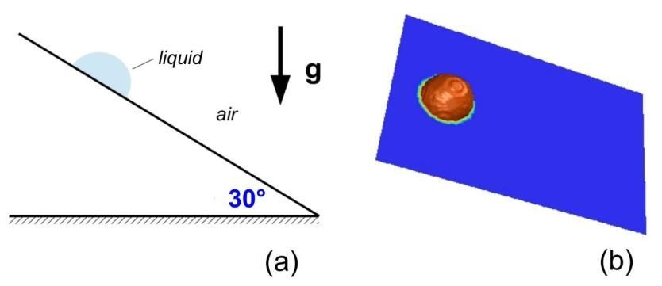
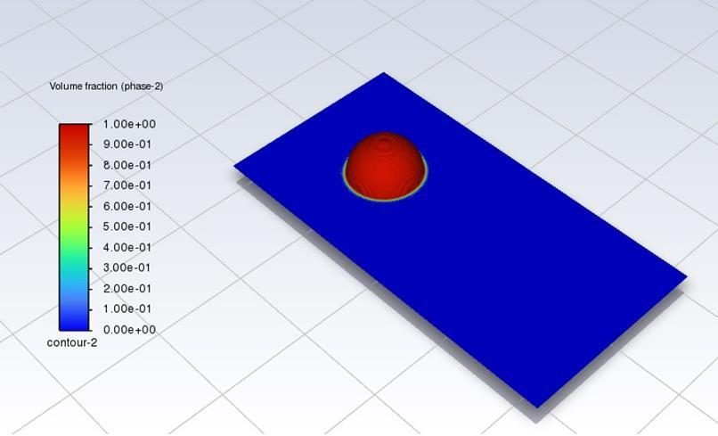
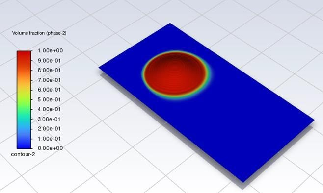
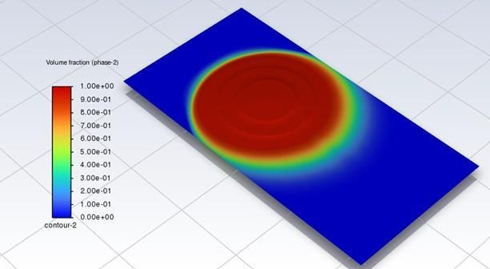
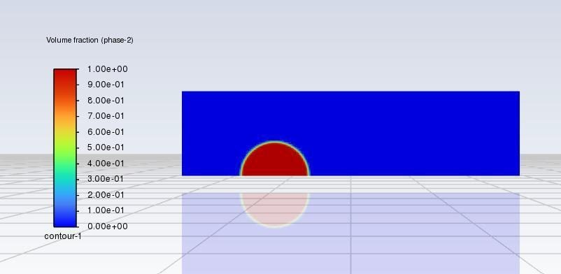

Fluid & Thermal
Inclined Droplet Dynamics: Engine Oil vs Mercury
Gravity and surface tension acting on a hemispherical droplet released on a 30° plate.
- Category
- Fluid & Thermal
- Tools
- Ansys Fluent · VOF
- Context
- Arizona State University
Overview
A droplet of engine oil or mercury starts as a hemisphere on a plate inclined at 30°. A VOF simulation follows how it spreads and deforms over 0.1 s, and the two liquids are compared.
Setup and method
- Engine oil: properties from the Fluent database, surface tension 0.03 N/m, 0.1 s transient run.
- Mercury: same set-up, 0.20 cm mesh, 0.004 s time step, 25 steps, 50 iterations per step.
- Boundary conditions: zero-gauge pressure outlet for the air, wall for the plate.
- Outputs: 3D iso-surface plots and 2D symmetry-plane contours at several times.
Results
By 0.1 s the mercury droplet has spread much farther than the engine oil droplet, which shows how density and surface tension govern the interplay between downslope flow and resistance to deformation.
Figures






Next project: Oscillating U-Tube: Two-Phase VOF Flow →